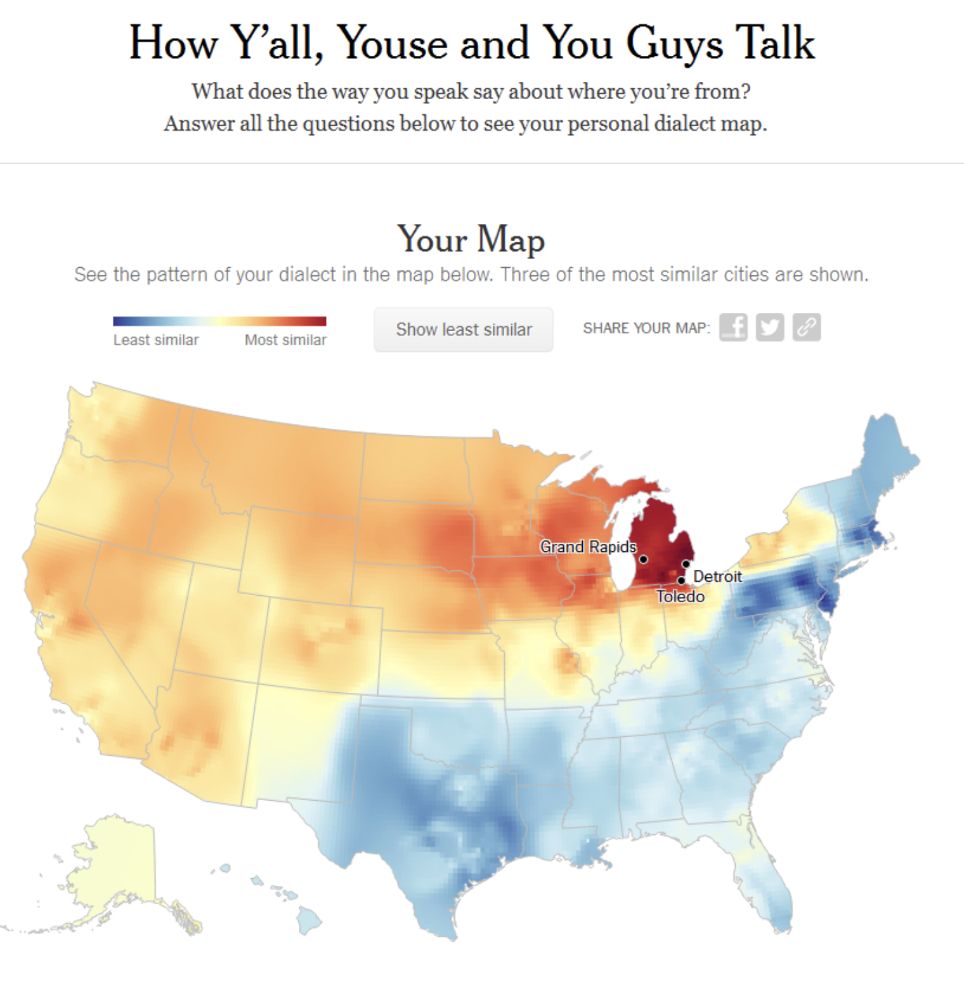
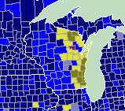

Classification with Naive Bayes
Behavioral Data Science in R II
NYT Dialect quiz
Classification
- Classify data according to discrete labels or groups
- Binary: yes/no, spam/ham, positive/negative, etc.
- Categorical: [happy, sadness, anger, fear, disgust, surprise]
Quiz
What is your generic term for a sweetened carbonated beverage?
Wisconsin: A state divided
- In Eastern Wisconsin, most people call soft drinks “soda”
- In Western Wisconsin, most people call soft drinks “pop”
Consider some (imaginary) survey data. If we know someone is from Wisconsin, can we use this data to help us determine which part of the state they are from?

| East | West | |
|---|---|---|
| pop | 61 | 76 |
| soda | 177 | 139 |
| coke | 10 | 29 |
| other | 2 | 6 |
| total | 250 | 250 |
Multinomial distribution
\[P(x;n, \pi) = {n\choose x_1, x_2,..., x_m} \prod^k_{i=1} \pi^{x_i} \]
As with the binomial distribution, the maximum likelihood estimate for \(\pi_i\) is the proportion of observations in category \(i\).
Multinomial MLE
| East | West | |
|---|---|---|
| pop | 61 | 139 |
| soda | 177 | 76 |
| coke | 10 | 29 |
| other | 2 | 6 |
| total | 250 | 250 |
\[\rightarrow\]
| East | West | |
|---|---|---|
| pop | .24 | .56 |
| soda | .71 | .30 |
| coke | .04 | .12 |
| other | .01 | .02 |
Bayesian Inference
I’m a Wisconsinite and I say “soda”—what’s the probability I am from Eastern Wisconsin?
\[P(h|d) = \frac{P(d|h)P(h)}{P(d)}\]
Uniform prior probability
\[P(h|d) = \frac{(.71) (.50)}{(.71)(.50) + (.30)(.50)} = .702\]
Informative prior probability
Vast majority of Wisconsinites live in Eastern Wisconsin
\[P(h|d) = \frac{(.71) (.80)}{(.71)(.80) + (.30)(.20)} = .904\]
Adding up observations
- Generally, we can’t figure out where someone is from based on only one aspect of their dialect.
- Instead, we need to be able to combine multiple pieces of evidence.
- We want: \(P(h|d_1, d_2, ..., d_j)\)
- But we generally don’t know how to write out a distribution or function for this probability
Adding up independent observations
… unless the observations are independent!
Think about it …
What was the formula for calculating the probability of two independent variables?
If \(d_1\) and \(d_2\) are independent, then:
\[P(h|d_1, d_2) = P(h|d_1) \times P(h|d_2)\]
Naive Bayes: The idea
- The key idea behind Naive Bayes is to assume independence between the features used for prediction.
- Model the features as each independently caused by the class label or category membership
Multi-class Naive Bayes Classifier: The math
If we have:
- \(m\) classes \(C_1, C_2, ..., C_m\)
- \(k\) features \(x_1, x_2, ..., x_k\):
\[P(C_j | x_1, x_2, ..., x_k) \propto P(C_j) \prod^k_{i=1}P(x_i|C_j)\]
Example
Let’s examine 3 items from the Harvard dialect survey for the Midwestern states.
# A tibble: 20 × 6
state item_num item ans_ind ans_text ans_p…¹
<chr> <dbl> <chr> <chr> <chr> <dbl>
1 iowa 4 caramel a "with 2 syllables (… 0.677
2 iowa 4 caramel b "with 3 syllables (… 0.127
3 iowa 4 caramel c "I use both interch… 0.151
4 iowa 4 caramel d "I have both forms,… 0.0359
5 iowa 4 caramel e "other" 0.0096
6 iowa 50 What word(s) do you u… a "you all" 0.0995
7 iowa 50 What word(s) do you u… b "yous, youse" 0.005
8 iowa 50 What word(s) do you u… d "you guys" 0.547
9 iowa 50 What word(s) do you u… g "you" 0.276
10 iowa 50 What word(s) do you u… h "other" 0.0199
11 iowa 50 What word(s) do you u… i "y'all" 0.0522
12 iowa 105 What is your generic … a "soda" 0.142
13 iowa 105 What is your generic … j "other" 0.0305
14 iowa 105 What is your generic … b "pop" 0.799
15 iowa 105 What is your generic … c "coke" 0.0102
16 iowa 105 What is your generic … e "soft drink" 0.0178
17 illinois 4 caramel a "with 2 syllables (… 0.595
18 illinois 4 caramel b "with 3 syllables (… 0.190
19 illinois 4 caramel c "I use both interch… 0.162
20 illinois 4 caramel d "I have both forms,… 0.0388
# … with abbreviated variable name ¹ans_propMultinomial Naive Bayes: The Code
x <- tribble(
~item_num, ~ans_ind,
4, "a",
50, "d",
105, "a"
)
res <- left_join(x, hds_mini, by = c("item_num", "ans_ind")) %>%
group_by(state) %>%
summarize(
likeli = prod(ans_prop)
) %>%
mutate(
prior = 1/n(),
pdata = sum(likeli*prior),
posterior = likeli*prior/pdata
)
res# A tibble: 7 × 5
state likeli prior pdata posterior
<chr> <dbl> <dbl> <dbl> <dbl>
1 illinois 0.104 0.143 0.0848 0.175
2 indiana 0.0543 0.143 0.0848 0.0914
3 iowa 0.0528 0.143 0.0848 0.0889
4 michigan 0.0507 0.143 0.0848 0.0854
5 minnesota 0.0585 0.143 0.0848 0.0985
6 ohio 0.0584 0.143 0.0848 0.0984
7 wisconsin 0.215 0.143 0.0848 0.362 Visualizing the results